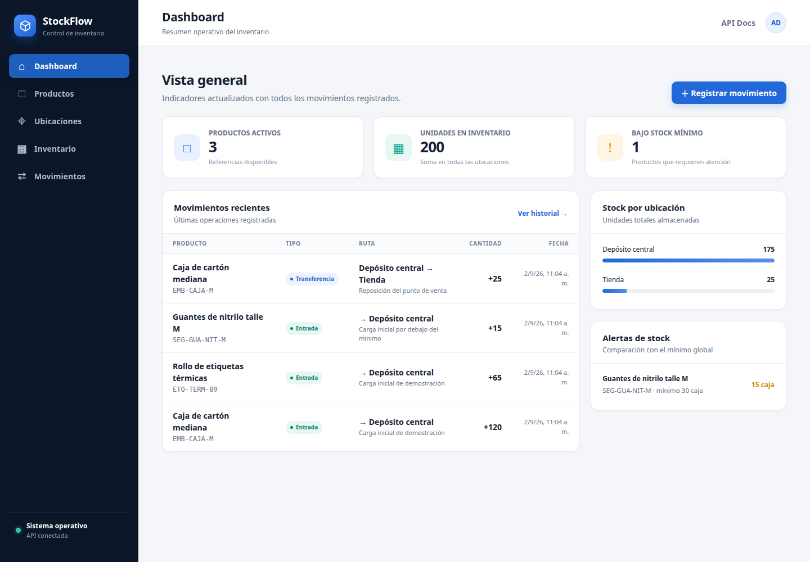
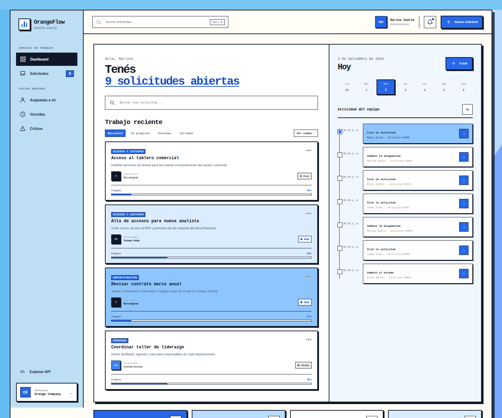
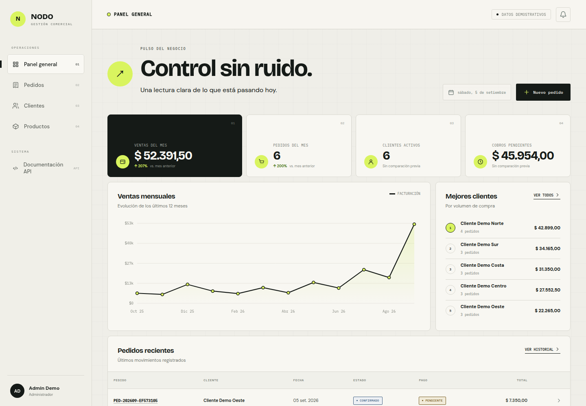

Desarrollo de software
Sistemas internos y aplicaciones a medida para gestionar inventario, pedidos, clientes, solicitudes y otros procesos de tu operación.
Desarrollo sistemas internos, soluciones con bases de datos y reportes para reemplazar procesos manuales, centralizar información y resolver necesidades concretas del negocio.
La herramienta se elige después de entender el proceso, las personas que lo usan y el resultado que necesitás conseguir.
Sistemas internos y aplicaciones a medida para gestionar inventario, pedidos, clientes, solicitudes y otros procesos de tu operación.
Diseño de modelos, consultas SQL, corrección de inconsistencias y optimización para trabajar con información ordenada y mantenible.
Dashboards, indicadores y consolidación de información para que distintas áreas puedan analizar y decidir con los mismos datos.
Conexión de sistemas, APIs, archivos y bases de datos para reducir trabajo manual y mejorar el flujo de información.
Cuatro proyectos completos construidos con datos demostrativos para representar problemas habituales de una empresa.

Sistema para centralizar productos, depósitos, existencias y movimientos de inventario con reglas de negocio y alertas de stock.
Ver proyecto en GitHub →
Plataforma para gestionar solicitudes internas, responsables, prioridades, estados, comentarios e historial de cambios.
Ver proyecto en GitHub →Plataforma de reporting que valida ventas desde archivos CSV, centraliza los datos y permite analizar indicadores, filtros y exportaciones.

Sistema comercial para administrar clientes, productos, pedidos, precios históricos, pagos y métricas del negocio.
Ver proyecto en GitHub →Todos los proyectos usan datos ficticios y están publicados como demostraciones de portfolio.
Primero entendemos el resultado esperado. Después definimos alcance, tiempos y precio antes de comenzar.
Analizamos el problema, los procesos actuales, las fuentes disponibles y el resultado que necesitas.
Definimos una solución clara, realista y adaptada a tus herramientas, datos y forma de trabajo.
Desarrollamos los modelos, procesos, integraciones, automatizaciones o reportes necesarios.
Probamos resultados, revisamos errores y confirmamos que la solución responda al problema real.
Entregamos la solución documentada y explicamos cómo utilizarla, mantenerla y ampliarla.
Trabajo profesionalmente en Business Intelligence y administración de bases de datos, y desarrollo sistemas orientados a resolver problemas operativos concretos.
Mi experiencia combina negocio, datos y software. Eso me permite entender el proceso antes de programar y entregar soluciones prácticas, documentadas y fáciles de mantener. También estudio Ingeniería en Computación en la Universidad de la República.
Algunas respuestas sobre los servicios, la forma de trabajo y cómo comenzar.
Puedo desarrollar o mejorar sistemas internos, bases de datos, reportes, integraciones y procesos que hoy dependen de tareas manuales o herramientas desconectadas.
No. Primero revisamos el problema, cómo trabajás actualmente y qué resultado necesitás. A partir de eso, definimos una solución clara y realista.
Sí. Puedo revisar reportes, bases de datos, automatizaciones y procesos existentes para detectar errores y mejorar su funcionamiento.
La tecnología se elige según el problema y las necesidades del proyecto. Trabajo con software web, bases de datos, archivos, APIs, automatizaciones y herramientas de reporting.
Dependen del alcance, la información disponible, las integraciones necesarias y la complejidad de la solución. Todo se define antes de comenzar.
Una breve descripción del problema, algunos ejemplos y el resultado que esperás. Con eso podemos evaluar el proyecto y definir los próximos pasos.
Puede ser un sistema interno, un reporte que no coincide, una base lenta, una tarea manual o dos herramientas que necesitás conectar. Te responderé con los próximos pasos.